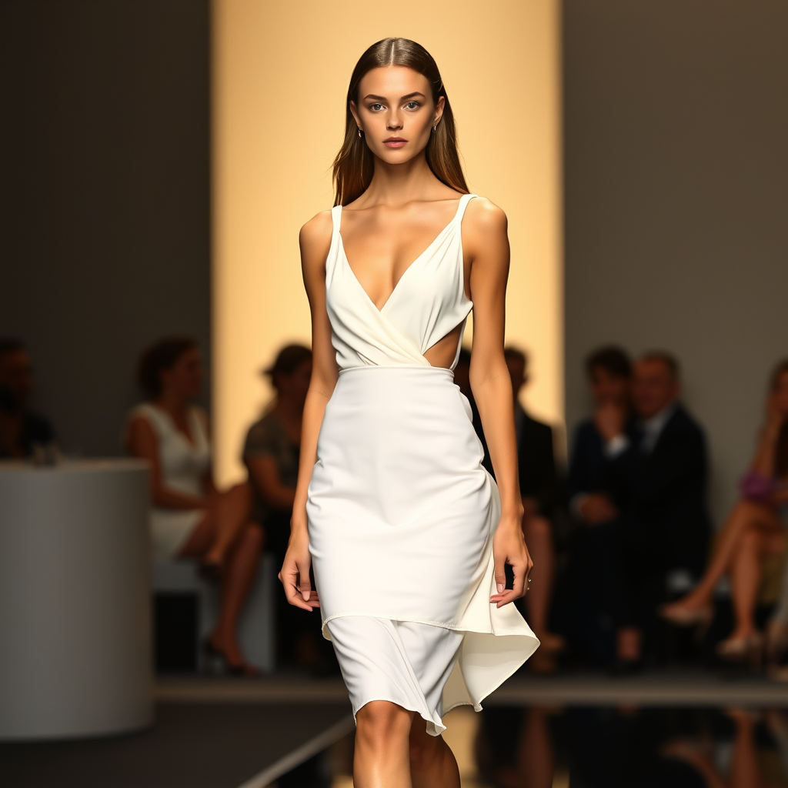

Breaking News: Emerging Designer Shines at Paris Fashion Week with Sustainable Collection.
Published: 25 August 2024
The highly anticipated Paris Fashion Week saw a dazzling array of talent, but it was emerging designer Priya Kapoor who stole the spotlight with her innovative and sustainable collection. Models graced the runway, showcasing Kapoor’s vision of fashion’s future—one where elegance meets environmental consciousness. Kapoor, known for her commitment to eco-friendly fashion, presented a collection made entirely from recycled materials, organic fabrics, and natural dyes. Her designs featured flowing silhouettes, earthy tones, and intricate detailing, seamlessly blending traditional craftsmanship with contemporary aesthetics.
As the final model took her walk, the audience gave Kapoor a standing ovation, marking her official entry into the ranks of fashion’s elite. The show ended with Kapoor taking a humble bow, her eyes filled with gratitude and determination. With this successful debut, Priya Kapoor has firmly established herself as a trailblazer in the fashion world, proving that style and sustainability can go hand in hand. Fashion enthusiasts and industry insiders alike eagerly await what she will bring to the runway next.